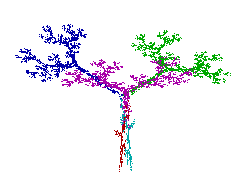

Fraktale mittels Chaosspiel (IFS: iterierte Funktionssysteme)
Information zu IFS
Eine affine Abbildung hat die Form
x' = a1*x + b1*y + v1
y' = a2*x + b2*y + v2
Sie ist also durch 6 Zahlen bestimmt. Weitere Infos zu affinen Abbildungen
Beispiel: Code der Eiche (5 Abbildungen zu 6 Zahlen = 30 Zahlen)

Jede Zeile beschreibt eine affine Abbildung
| a1 | b1 | a2 | b2 | v1 | v2 |
| 0.1950 | -0.4880 | 0.3440 | 0.4430 | 0.4431 | 0.2452 |
| 0.4620 | 0.4140 | -0.2520 | 0.3610 | 0.2511 | 0.5692 |
| -0.0580 | -0.0700 | 0.4530 | -0.1110 | 0.5976 | 0.0969 |
| -0.0350 | 0.0700 | -0.4690 | -0.0220 | 0.4884 | 0.5069 |
| -0.6370 | 0.0000 | 0.0000 | 0.5010 | 0.8562 | 0.2513 |
In der Anwendung werden die Fraktale mittels Chaosspiel gezeichnet: Ausgehend von einem Punkt werden die Abbildungen
gemäss 'Zufallprinzip, aber Häufigkeit proportional zur Abbildungsdeterminante' bis 160'000 mal nacheinander ausgeführt.
Man könnte die Fraktale auch mittels eines rekursiven Algorithmus deterministisch erzeugen:
Ausgehend von einem Dreieck kann je nach Wahl der Stufe die Entstehung des Fraktals demonstriert werden.
Das entstehende Fraktal ist völlig unabhängig von der Ausgangsfigur!